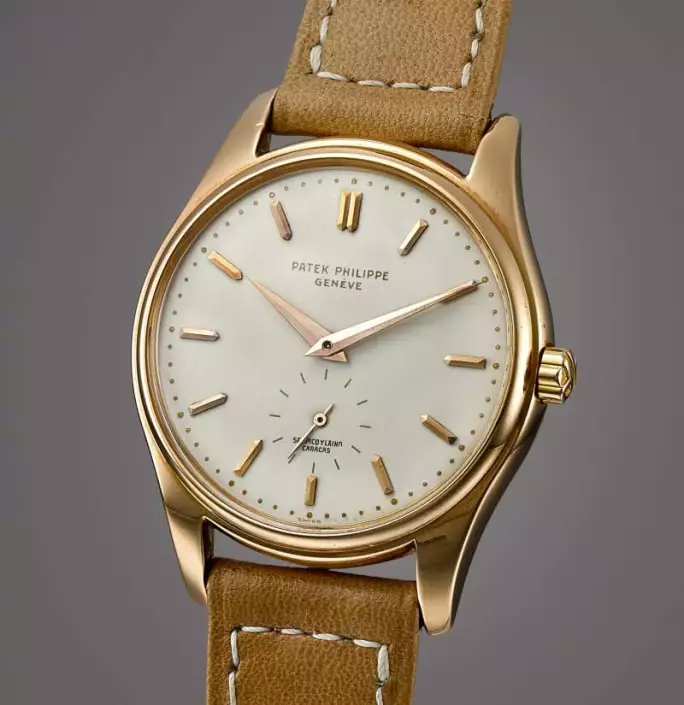
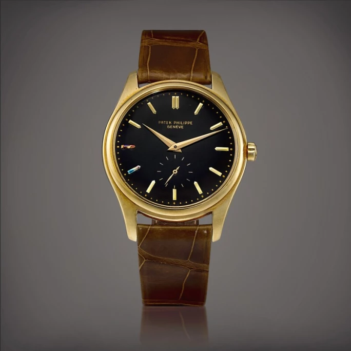

譯自 David Ho · Sotheby's Hong Kong · 2022年4月21日
熱愛鐘錶收藏的藏家忍痛割愛，實屬罕見。蘇富比有幸得到一位重要藏家相託，在香港春季拍賣期間欣呈「雋永傳奇」專場，誠獻38枚百達翡麗頂級古董時計。來自瑞士的百達翡麗是鐘錶界首屈一指的顯赫品牌，屹立至今，已成為日內瓦最後一個由家族經營的獨立製錶商。
堅持創新
1839年，波蘭製錶師安東尼．百達（Antoni Patek）認識了發明無匙上鏈機制的法國製錶師亞德里安．翡麗（Adrien Philippe），兩人其後共同創立了以他們命名的百達翡麗。1951年，維多利亞女王購藏了品牌的一枚無匙懷錶。她非常喜歡這枚以玫瑰切割鑽石裝飾的時計，對之讚不絕口，並再次購藏了品牌的另一款獨家時計。百達翡麗因而聲名大噪。
除了製作時尚腕錶外，百達翡麗亦一直秉持創新傳統，推陳出新。品牌打造了第一枚瑞士腕錶，而且擁有多項功能和複雜功能的專利。這些功能和複雜功能，例如萬年曆，為現代鐘錶奠定了穩固的基礎。
百達翡麗為鐘錶界的發展繪製藍圖，但其生產數量仍然有限。品牌以巧手製作時計，每年僅生產約80,000枚腕錶。相比之下，勞力士每年生產的腕錶能夠達到100萬枚。
百達翡麗的出品經得起時間考驗，即使是1940年代製的時計，在今日標準看來，工藝品質依然卓越。這次拍賣的時計就如剛出產時一樣，精準可靠。
精益求精
拍品2018的第二代2499型號是今次拍賣的領銜亮點。它是一枚獨特的萬年曆計時腕錶，備月相顯示和18k粉紅金錶殼。包括本次拍品在內，以粉紅金製成的第二代2499型號在全世界已知只有九枚。

百達翡麗 | 型號2526 | 粉紅金腕錶，備琺瑯錶盤，由 Serpico Y Laino 發行，1957年製 | 估價 400,000 - 550,000 港元
拍品附帶的百達翡麗原廠後補資料庫精粹確認，此錶在1957年製造，1958年10月18日經意大利著名鐘錶及珠寶零售商 Gobbi Milano 發行。Gobbi Milano 經手過眾多百達翡麗時計，被美譽為「皇家鐘錶匠」。
這款百達翡麗是品牌最重要的腕錶之一，近年人氣高企。落落大方的錶殼和萬年曆計時機芯相結合，使2499型號可能成為當今世上最具收藏價值的古董腕錶。
百達翡麗只生產過349枚2499型號。換言之，在長達35年的生產期中，每年平均產量大約只有9枚。
2499型號經歷過四次重大轉變。拍品2018屬第二代，配備圓形計時按鈕，取代了第一代的方形計時按鈕，在1955年至1964年間投產。
本次上拍的第二代2499型號腕錶品相極佳，幾乎與剛出產時無異，預計售價高達4,800萬港元（610萬美元）或以上。
2018年，另一枚2499型號腕錶以2,350萬港元（300萬美元）售出，創下當時亞洲鐘錶拍賣史上的最高成交紀錄。
百達翡麗亞洲藏家
過去數十年，百達翡麗腕錶主要在美國銷售。隨著越來越多亞洲藏家加入鐘錶收藏行列，百達翡麗在亞洲市場的交易越見旺盛。
二十年前，全球估計有300名百達翡麗腕錶的藏家。如今，亞洲市場的爆炸式增長令藏家數目增至過萬人。
其他珍貴腕錶
拍品2024是1463型號精鋼計時腕錶，備寶璣式時標。此型號的腕錶大多是黃金款，僅有少數粉紅金及精鋼款式。本次上拍的這枚精鋼1463型號沒有任何侵蝕痕跡，彌足珍貴。
其他稀有難求的款式包括幾枚備夜光功能的古董百達翡麗腕錶。拍品2021是第二代2499型號，亦是同類中已知唯一的夜光範例。品牌在過去三十多年間生產了349枚2499型號腕錶，當中已知僅有五枚為夜光腕錶，擁有夜光功能的第二代更是前所未聞。
備有黑色錶盤的百達翡麗腕錶同樣備受追捧。拍品2007是一款品相精良的2526型號黃金腕錶，備黑色琺瑯錶盤。同型號的黑色錶盤款已知只有十枚，此拍品為其中之一。

百達翡麗 | 型號2526 | 黃金腕錶，備黑色琺瑯錶盤，品相出衆，約1953年製 | 估價 800,000 - 1,600,000 港元
懷錶
「雋永傳奇」專場不單呈獻腕錶，還有九枚懷錶。
九枚懷錶均以黃金製造，有多款設計。拍品2011是一枚黃金雙發條輕觸式三問直線萬年曆懷錶，簡單又優雅。它在1957年由蒂芙尼（Tiffany & Co.）發行，原爲法國及瑞士鐘錶著名收藏家 Esmond Bradley Martin 珍蓄。2002年，這枚懷錶在蘇富比以265,000美元售出，二十年後再度登場，預計會以高達280萬港元（約合360,000美元）成交。
拍品2028是一枚黃金三問萬年曆獵殼懷錶，備月相顯示，功能更加先進。此錶在1874年製成，而且在1962年應特別要求安裝新錶殼，別具歷史意義。
百達翡麗有一句膾炙人口的標語：
「沒有人真正擁有百達翡麗，只不過為下一代保管而已。」
「雋永傳奇」單一藏家專場呈獻多款如今市場上可遇不可求的百達翡麗珍貴時計，還望新藏家讓它們代代相傳，續寫黃金傳奇。